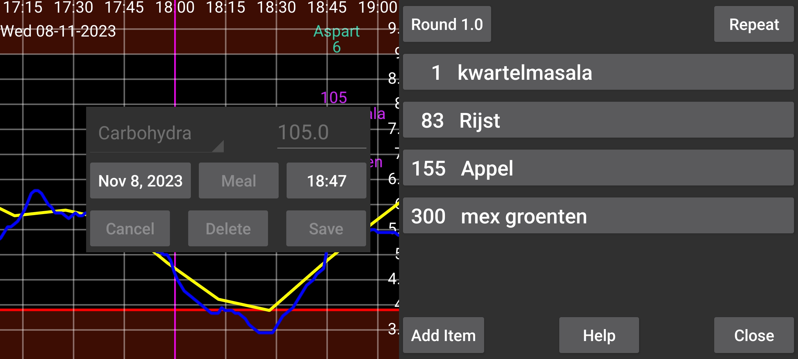
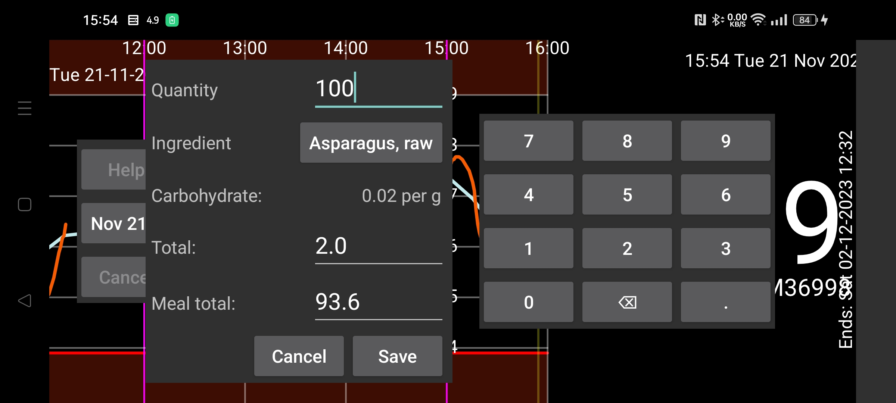
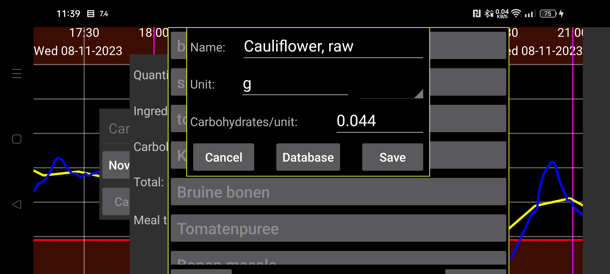

ar az be de es fa fr hi it ja ko nl pl pt ru tr uk uz zh en
Yeməyin tərkib hissələrinin miqdarlarını göstərin. Proqram karbohidratların ümumi miqdarını hesablayacaq. Əksinə, bütün yemək və ya ayrıca tərkib hissəsi üçün istədiyiniz karbohidrat miqdarını daxil edə bilərsiniz; bu halda proqram həmin karbohidrat miqdarına uyğun lazım olan tərkib hissəsinin miqdarını hesablayır.
Yeməyə tərkib hissəsi əlavə etmək üçün Element əlavə et düyməsinə basın. Açılan pəncərədə tərkib hissəsini seçin və onun miqdarını (və ya yeməyin, yaxud həmin elementin ümumi karbohidrat miqdarını) daxil edin. Seç düyməsinə və ya artıq göstərilmiş tərkib hissəsinə toxunduqda əvvəldən təyin edilmiş tərkib hissələrinin siyahısı açılır.
Yeni tərkib hissəsi yaratmaq üçün həmin siyahıda Təyin et seçin. Sonra tərkib hissəsinin adını və seçilmiş ölçü vahidinə görə karbohidrat tərkibini daxil edə bilərsiniz. Həmçinin Verilənlər bazası düyməsi ilə qida tərkibi bazasında ərzaq axtara, tərkibinə baxa və Seç düyməsi ilə onun adını və karbohidrat miqdarını tərkib hissəsinin tərifinə köçürə bilərsiniz.